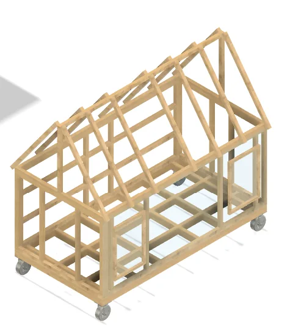
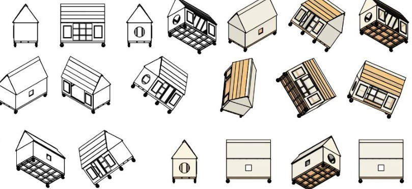
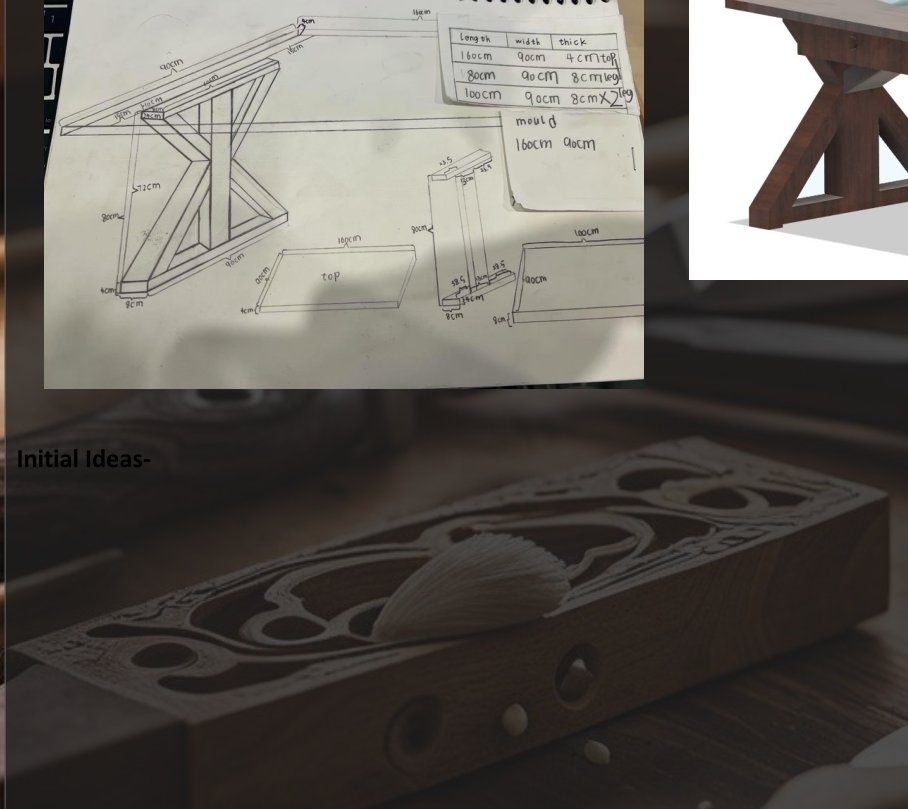
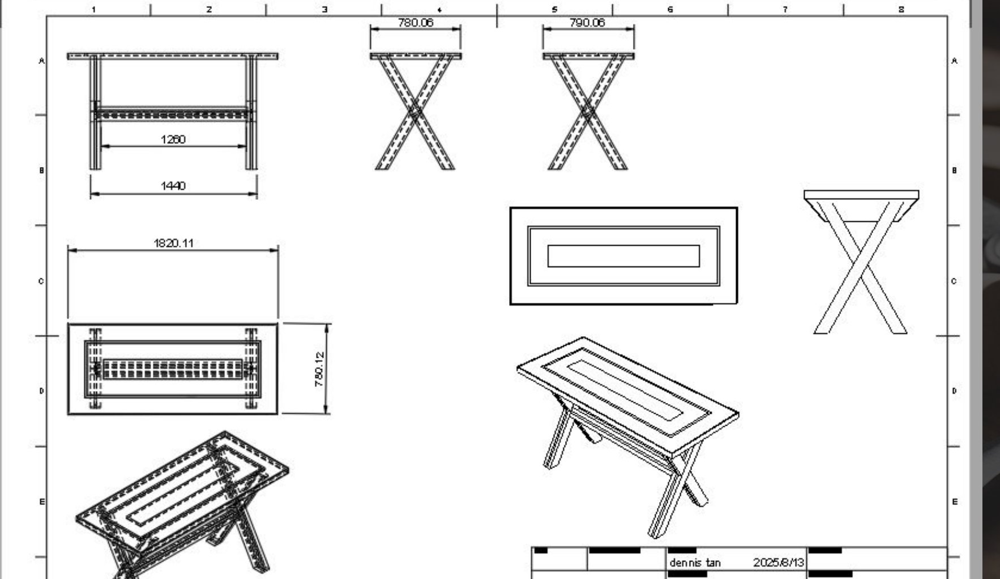
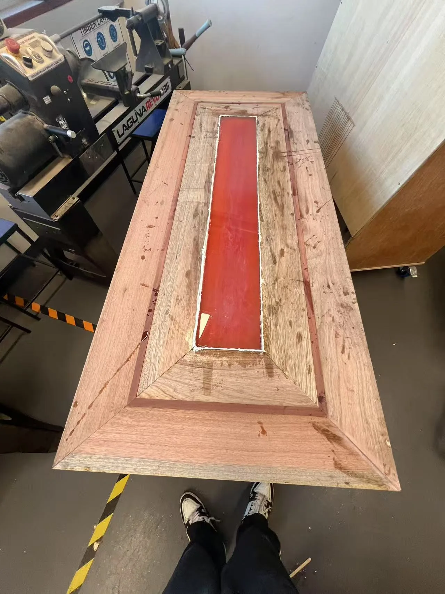

Design is a process.
Beyond the polished result: original sketches, technical drawings, workshop decisions and recorded problem-solving. Follow how the two 2025 HSC projects evolved from research into real prototypes.

Design for dignity and practical shelter.
The Tiny Homeless Shelter began with a social problem: the lack of private, protected temporary space for people experiencing homelessness. The original folio considered security, weather protection, transport, material cost and a compact layout.
- A raised, wheeled timber base to allow relocation of the prototype.
- Enclosed walls, framed windows and a lockable opening for privacy.
- Timber body and pitched roof developed through CAD and physical construction.
Source: original HSC Design & Technology Folio, pp. 3, 10–13, 33–36. This is a student prototype, not certified permanent housing.

Three layers, one construction system.
The design investigated a modular sequence: base, wall/body, and roof. The documented build started with a timber base and four braking castors, followed by upright framing, roof rafters and cladding.
The folio also describes interior storage and emergency lighting. The finished photographs make it possible to compare those decisions with the actual construction, not merely a CAD render.
Source: HSC shelter folio, pp. 11, 33–36. Some features were design intentions; performance testing is not claimed.

Changing the form to make it buildable.
The timber project did not progress in a straight line. Earlier concept ideas were re-evaluated because of the number and difficulty of joints. The eventual support frame used the distinctive crossed-leg layout with a connecting beam.
The selected materials were Tasmanian Oak and Australian Blue Gum: a light timber alongside a richer reddish tone, used to create contrasting layers and accents.
Source: original HSC Timber Major Work Folio, pp. 17–19 and 26.

Layered joinery and measured intent.
The final table uses a layered tabletop with a mitred outer frame, contrasting timber insertions, a red-toned resin centre and a laminated X-frame support. The folio documents the use of 45-degree mitres and interlocking angled joinery.
Engineering drawings explore the table at approximately 1820 × 780 mm at the design stage. The interactive reconstruction communicates the structure but is not a manufacturing-accurate source model.
Source: original HSC Timber Folio, pp. 17–19 and 29. Dimensions shown are from design drawings.

The finish did not go perfectly.
The production record documents difficulties with resin curing and contamination. Dennis described removing a problematic section and re-pouring the resin multiple times before improving the result. The colour also evolved from a blue design idea toward the red/pink final treatment.
Documenting setbacks is part of professional design: identifying an issue, changing the method and evaluating the outcome.
Source: original HSC Timber Folio, pp. 31 and 38. Photos show real workshop stages.
Original evidence, not stock projects
These studies use excerpts and images from Dennis's own HSC submissions. Personal student-number fields are excluded. CAD models, engineering plans, progress photographs and finished outcomes are labelled separately to avoid confusion.
EXPERIENCE THE INTERACTIVE STUDIO ↗